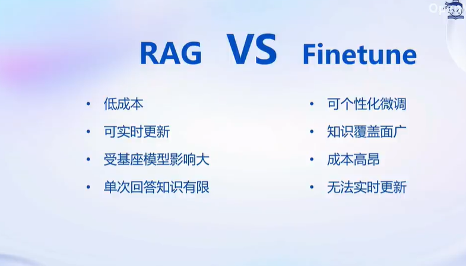
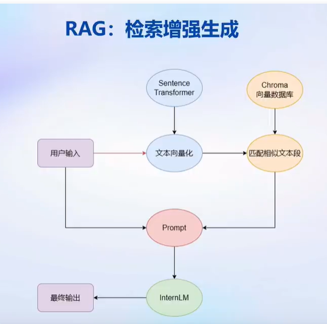
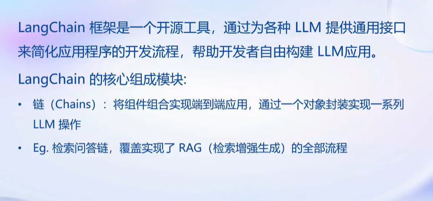
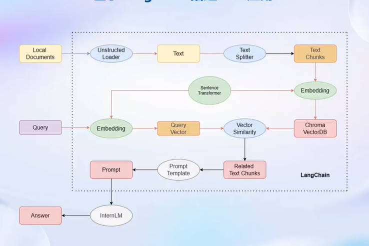

大模型实战营第三次课笔记
这是大模型实战营第三次课的笔记
基于InternLM和LangChain搭建知识库
背景知识
大模型开发范式
RAG(Retrieval Augmented Generation, 检索增强生成) v.s. Finetune

RAG 原理

RAG之前没有做过，不过通过这次作业的基础部分来看，RAG在数据量很小（demo未经改动仅处理了文档的前10个）的情况下似乎并不完全可信。
LangChain简介

构建向量数据库

demo里给了一个使用UnstructuredMarkdownLoader和UnstructuredTextLoader加载markdown和txt文件，以及使用RecursiveCharacterTextSplitter进行文本分割的例子。
搭建知识库
- 将LLM接入LangChain
这是通过继承LLM类并重写其中的调用方法_call()实现的
- 构建检索问答链
本质上是以第3步建立的向量数据库作为外接查询，使这一步接入的LLM具有查询能力。具体探索见作业
RAG优化建议
基于语义进行分割
为chunk生成概括索引（为什么可以提高recall?）
迭代优化prompt（如何操作？）
动手实践
见作业